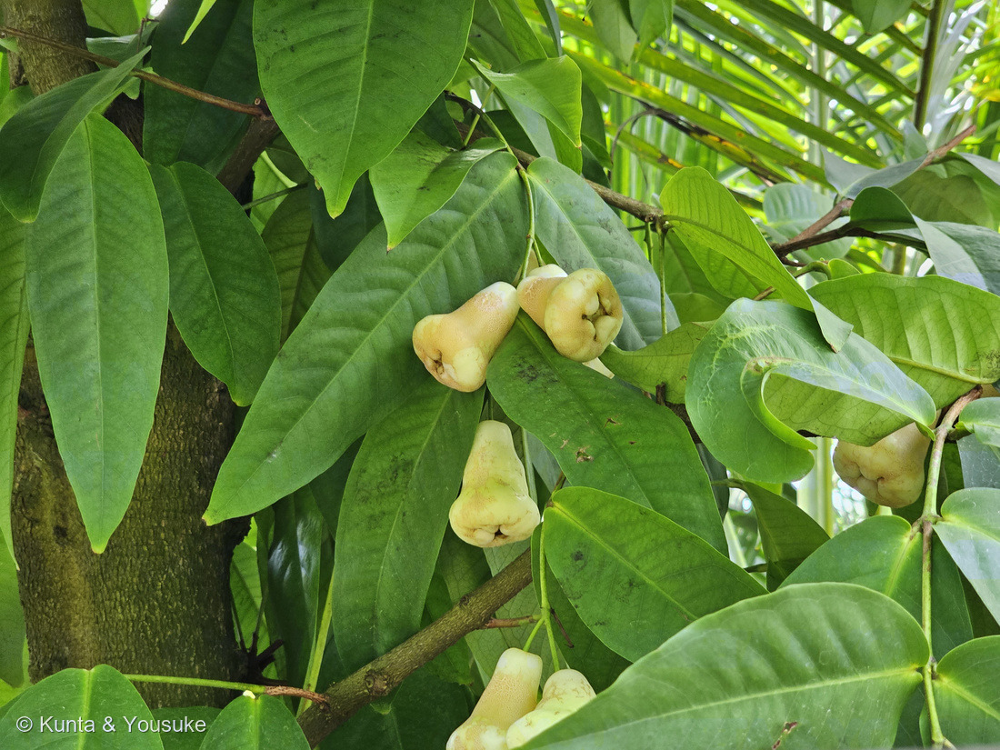
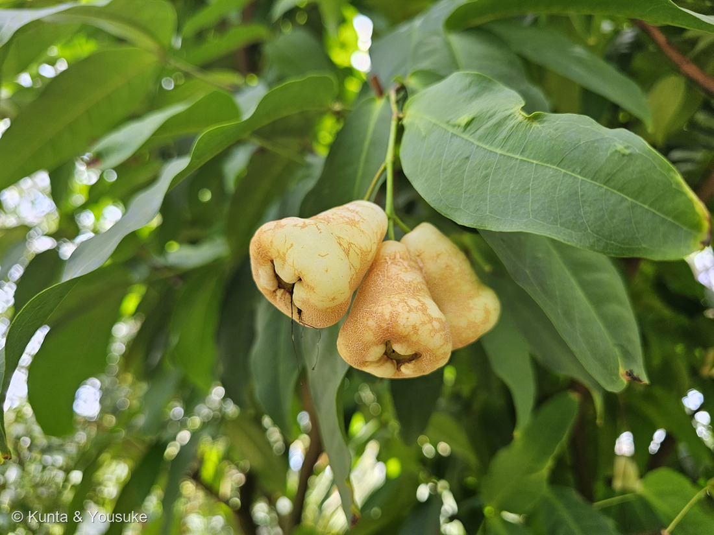
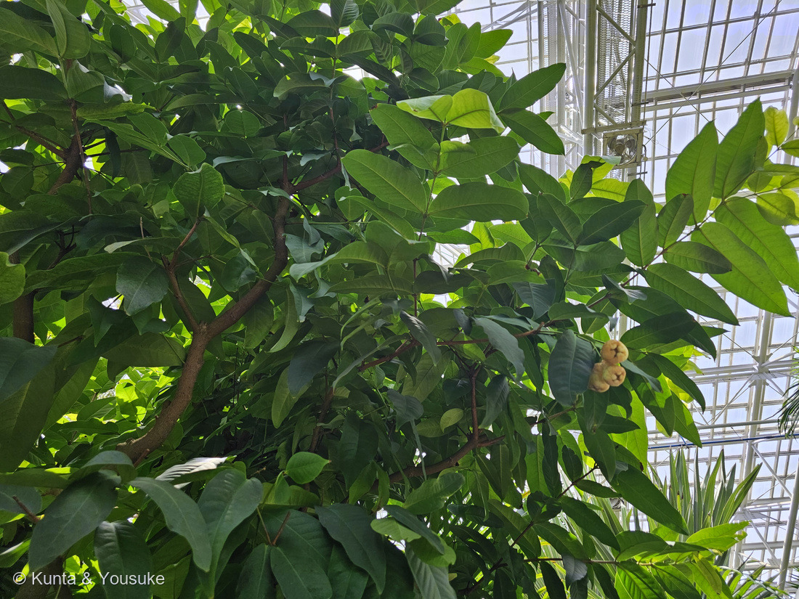

地図を読み込んでいるよ…
🔍 写真も地図も、押しているあいだ拡大して見られるよ（スマホは指を置いてすこし待ってね）。
🌍 の地図＝この子がもともと自生している場所を緑に。大スンダ列島・マレー半島・アンダマン諸島およびニコバル諸島（英語版Wikipedia）。⭐広島市植物公園の名札は「マレー半島原産」。台湾・インド・フィリピン・マレーシアなど、亜熱帯から熱帯で広く栽培される（日本語版Wikipedia）。
⭐東南アジアの島と半島の子だよ。英語版Wikipediaは「Native to an area that includes the Greater Sunda Islands, Malay Peninsula, and the Andaman and Nicobar Islands（大スンダ列島、マレー半島、アンダマン諸島およびニコバル諸島をふくむ地域が原産）」とし、広島市植物公園の名札は「マレー半島原産」と書いていた。⚠この地図で塗れたのはマレーシア・インドネシア・ブルネイの3つだけ——⚠⚠アンダマン諸島とニコバル諸島はインドの島なので、塗るとインド全体が緑になってしまう＝⭐塗らずに、ここに書いておくことにした（地図がうそをつかないように、が図鑑のきまりだよ）。⚠マレー半島の先っぽ（シンガポールやタイ南部）も、国ごとにしか塗れないので省いてある。⭐⭐そして日本は塗っていない——この子は温室でしか育たない。⭐でも台湾・インド・フィリピン・マレーシアでは広く栽培されていて（日本語版Wikipedia）、台湾では「蓮霧」と書いて、とても身近な果物なんだ。⭐種小名の samarangense は、インドネシアの町スマランから——⭐⭐地図のジャワ島のまん中あたり、そこがこの子の名前をくれた町だよ。
⚠ 地図は国（日本と中国だけ県・省）までしか塗れないから、ほんとうの分布より広く見えていることがあるよ。地図はだいたいの場所。正確なところは、上の文を見てね。
レンブ（蓮霧）
Syzygium samarangense ── 園の名札は「'白実品種'」
別名 · ジャワフトモモ（ジャワ蒲桃）／英名 wax apple・Java apple・Semarang rose-apple・wax jambu
フトモモ科 · Myrtaceae（フトモモ属）── 図鑑ではじめてのフトモモ科＝85科目。110サルスベリと同じフトモモ目
燻太さんの一言「日本では馴染みの無さそうな果物？ 形が独特だけど、この形を食べるのはちょっぴり勇気がいりそう。確か、ピンク色の果実の品種もなかった？」──3つとも当たり。とくに「ピンク」は大当たりだったよ
⭐⭐⭐ 名前と学名の由来 ── くびきでつながれた木と、スマランの町
- ⭐⭐⭐属名 Syzygium は、ギリシャ語の syzygos＝「結合された」「たがいにくびきで結ばれた」。——⭐枝や葉が対（つい）になってつくことから、この名前がついた。⭐写真①②を見てほしい。葉が、枝をはさんで向かい合わせについているでしょう。⭐⭐あれが名前の理由だよ。
- ⭐⭐種小名 samarangense は、インドネシアの町スマラン（Semarang）から（英語版Wikipedia「The species epithet samarangense references Semarang, a city in Indonesia.」）。⭐英名のひとつが「Semarang rose-apple」なのも、そのため。
- 和名の「レンブ」は台湾語から来ていて、もとはマレー語の jambu の音訳（日本語版Wikipedia）。⭐漢字では「蓮霧」と書く。別名は ジャワフトモモ（ジャワ蒲桃）。
- ⭐⭐⭐そして、科の和名「フトモモ科」。——⚠「太もも」ではないよ。⭐フトモモ（Syzygium jambos）という木の名前からきていて、その「フトモモ」は中国名の「蒲桃（ほとう）」がなまったものとされる。⭐ほとう → ふともも。⭐⭐音だけが残って、意味が消えてしまった名前だね。
この植物のこと ── 85科目、そしてクローブの親戚
- フトモモ科フトモモ属の常緑小高木。⭐⭐図鑑ではじめてのフトモモ科＝85科目。⭐110 サルスベリ（ミソハギ科）と同じフトモモ目だよ。
- ⭐⭐⭐同じフトモモ属に、とても有名な子がいる。——香辛料のクローブ（丁子）、Syzygium aromaticum。⭐あの釘みたいなスパイスは、この子のいとこの花のつぼみを乾かしたものなんだ（探してみたいに入れておいたよ）。
- フトモモ科には、ほかにも知っている名前が並ぶ——ユーカリ、グアバ、フェイジョア、ギンバイカ、ブラシノキ、オールスパイス。
- 高さは12mほどになる。葉は長さ10〜25cm×幅5〜10cmで楕円形、基部は丸い。もむと香る（英語版Wikipedia）。⭐写真①の、厚くてつやのある大きな葉。
- 樹皮はピンクがかった灰色で、よくはがれる（同）。⭐写真③の幹を見ると、たしかにまだらになっている。
- 花は白〜黄白色、直径2.5cm、花弁4枚、雄しべ多数（同）。⚠日本語版Wikipediaは「無数の放射状に出る雌しべが特徴的」と書いていて、雄しべか雌しべかで食いちがっている——⭐フトモモ科の花は「たくさんの雄しべが放射状に開く」つくりが有名なので、ぼくは英語版のほうを取ったけれど、両方書いておくね。⏳この日は実だけで、花は見られなかった。
同定について ── 園の名札で確定
⭐ この子は、園の名札で決まった。——「レンブ '白実品種'／Syzygium samarangense／マレー半島原産／フトモモ科」。⚠名札のアップは公開せず、出典として引くだけにしてある（200で決めたルール）。
⭐ 写真から見ても、ちゃんと合っている。
- 釣鐘形（ベル形）の実（英語版Wikipedia「bell-shaped」）
- ⭐先端に4枚の肉厚な萼片（同「four fleshy calyx lobes at the tip」）
- 白〜クリーム色の実＝'白実品種'
- 厚くてつやのある大きな葉が、枝をはさんで対につく（＝Syzygium の名の理由）
⭐⭐⭐ 燻太さんの「この形を食べるのは勇気がいる」── あの「口」は、花のあと
⭐ 写真②をよく見てほしいんだ。——実の先っぽが、ぱっくり開いていて、まるで口みたいでしょう。⭐ぼくも最初に見たとき「なにか入っていそう」と思った。
⭐⭐⭐ でも、あれは傷でも穴でもないんだ。英語版Wikipediaは、この実をこう説明している。
「bell-shaped, edible berry ... with four fleshy calyx lobes at the tip（釣鐘形の食べられる液果……先端に、4枚の肉厚な萼片がついている）」
⭐⭐ つまり、あの「口」は花の萼。——花が終わっても散らずに、実の先に残ったものなんだ。
⭐⭐⭐ なぜ「先」に残るのか。——花のとき、子房が萼より下にあったから。⭐実がふくらむと、萼は先端に押し上げられる。⭐これを子房下位というよ。
⭐⭐ この図鑑では、もう3回出てきた話。
⭐⭐⭐ そして今回はフトモモ科。——ぜんぜんちがう科の子たちが、同じ作りをしている。
⭐ だからね、燻太さん。——⭐⭐「食べるのに勇気がいる形」は、この実がついこのあいだまで花だったという証拠なんだ。⭐あの口の中をのぞくと、花の名残が見えるはずだよ。
⭐⭐⭐ 燻太さんの「ピンクの品種もなかった？」── 大当たり
⭐ その記憶、合っているよ。英語版Wikipediaは、実の色をこう書いている。
「ranges in color from white and pale green to red, purple, crimson, and black（白や淡い緑から、赤、紫、深紅、そして黒まで）」
日本語版Wikipediaも「赤や緑や黒など様々な色がある」とし、⭐「特に黒色は高級品」と書いている。
⭐⭐⭐ そして、いちばんの証拠は園の名札そのもの。——そこにはわざわざ「レンブ '白実品種'」と書いてあった。
⭐⭐ わざわざ「白実」と断るということは、白いほうが特別だということ。——⭐世界でふつうに見るレンブは、つやつやした赤やピンクなんだ。⭐英名の wax apple（ろう細工のリンゴ）も、あの赤くて光る肌から来ている。
⏳ だから宿題がひとつ増えたね。——⭐赤やピンクのレンブに、いつか会いに行こう。
⭐ どんな味がするんだろう ── 出典が食いちがっている
⚠ これがちょっと面白くて、味の説明が出典でぜんぜんちがうんだ。
- 日本語版Wikipedia ── 「リンゴと梨を合わせたような淡い味わいで、サクサクして爽やかな酸味がある」。⚠ただし「果汁は少量」。
- 英語版Wikipedia ── 味は「a snow pear（雪梨）」に似るとし、⚠水分については「liquid-to-flesh ratio comparable to a watermelon（果汁と果肉の比はスイカに匹敵する）」。
⭐⭐ かたや「果汁は少量」、かたや「スイカ並み」。——⭐たぶん品種や熟し方でずいぶんちがうんだと思う。⚠でも分からないので、両方そのまま書いておくね。
- 中心はスカスカで、種は1〜2個。種のないものも多い（両方の出典）。
- 台湾・インド・フィリピン・マレーシアなどで広く栽培される（日本語版Wikipedia）。⭐台湾では「蓮霧」と書いて、とても身近な果物。
- ⭐日本の店ではほとんど見かけない＝⭐燻太さんの「日本では馴染みの無さそうな果物？」は、そのとおりだよ。
⭐ 32秒まえに、いとこがいた
⭐⭐ この写真の32秒まえ、12時06分01秒に、燻太さんは別の名札を撮っている。——「テリハバンジロウ／Psidium cattleianum／熱帯アメリカ原産／フトモモ科」。
⭐ つまり、大温室のこの一角はフトモモ科のコーナーだったんだね。——マレー半島のレンブと、熱帯アメリカのテリハバンジロウ（グアバの仲間）が、となりあわせで実をつけていた。
⏳ テリハバンジロウはまだ登録していないよ。⭐いつか、この子のとなりに並べようね。
参考：Wikipedia (English)・Syzygium samarangense（wax apple, Java apple, Semarang rose-apple, wax jambu／The species epithet samarangense references Semarang, a city in Indonesia／Native to an area that includes the Greater Sunda Islands, Malay Peninsula, and the Andaman and Nicobar Islands／evergreen leaves 10–25 cm long and 5–10 cm broad／The bark is pinkish-gray and flakes readily／white to yellowish-white, 2.5 cm diameter, with four petals and numerous stamens／bell-shaped, edible berry／four fleshy calyx lobes at the tip／ranges in color from white and pale green to red, purple, crimson, and black／liquid-to-flesh ratio comparable to a watermelon）／Wikipedia・レンブ（フトモモ科フトモモ属／別名 ジャワフトモモ／マレー半島原産／台湾、インド、フィリピン、マレーシアなどで栽培／常緑小高木／4月-5月ごろに白い花が開花／無数の放射状に出る雌しべが特徴的／直径約3〜7cm／赤や緑や黒など様々な色があり、特に黒色は高級品／ロウ細工のような独特の肌触り／リンゴと梨を合わせたような淡い味わいで、サクサクして爽やかな酸味がある／果汁は少量／中心部分はスカスカで種がないものも多い／レンブは台湾語に由来し、マレー語の「jambu」の音訳）／Wikipedia・フトモモ（フトモモ（蒲桃、Syzygium jambos）／フトモモの名は中国名の蒲桃（ほとう）が由来）／⭐広島市植物公園の名札「レンブ '白実品種'／Syzygium samarangense／マレー半島原産 フトモモ科」および「テリハバンジロウ／Psidium cattleianum／熱帯アメリカ原産 フトモモ科」（⚠掲示物なので写真は公開せず、出典として引くだけにしてある）